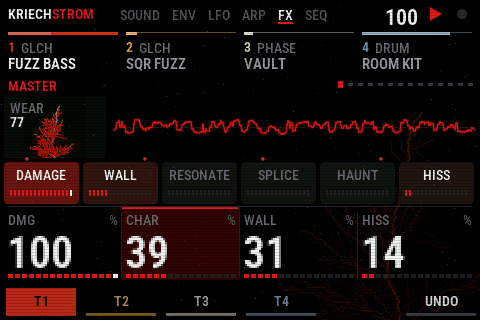

KRIECHSTROM
FOR VIBE FM
Грувбокс под мрачный индастриал и EBM с M-VAVE FM-1 как родной Vibe: тот же звуковой движок, но на большом экране, с пэдами, аудиовходом, MIDI-выходом, CV и сценой.
kriechstrom.wasm kriechstrom.zip для VIBE FM VST Открыть Playground
В браузере: открыть Playground, перетащить kriechstrom.wasm на устройство и нажать PLAY.
В DAW: перетащить kriechstrom.zip на окно VIBE FM VST.

Экран изнашивается вместе со звуком: разряд за страницей растёт с DAMAGE и WALL, картинка рвётся на ударах и зернится от HISS. Насколько сильно, задаёт MENU > DISPLAY: OFF, LOW (как здесь) или FULL.
Тот же момент: четыре дорожки с самого начала, DAMAGE, CHAR, HISS и WALL постепенно выкручены.Что добавляет VIBE
- Экран 480 x 320. Страницы SOUND, ENV, LFO, ARP, FX и SEQ, четыре значения на энкодерах 1-4 крупным шрифтом, четыре дорожки с уровнями всегда сверху; пиано-ролл или сетка барабанов на восемь линий, над ней весь паттерн; SONG, AUTOMATION, операторы FM6, микшер, слоты проекта.
- Экран, который изнашивается. Kriechstrom по-немецки ток утечки: он ползёт по стареющей изоляции и оставляет ветвистый след. Этот след растёт за каждой страницей настолько, насколько DAMAGE и WALL износили микс; DAMAGE рвёт картинку на ударах, CHAR в сторону DIGITAL разводит цвета, SPLICE вырезает из неё полосы, DRAG из HAUNT её проседает, HISS даёт зерно.
- Пэды. Мьют и DICE для каждой дорожки, эффекты на удержание (повтор 1/16, остановка плёнки, заморозка, гейт), четыре линии барабанов с силой удара. На странице SEQ пэды становятся 16 шагами и светятся, пока играют.
- Аудиовход. Гитара, голос или драм-машина в микс и через весь мастер, с DRIVE и посылами; GATE, который открывают ноты дорожки (барабаны рубят гитару); и вход вместо дорожки как источник для INFECT: голос говорит через пэд вокодером VOX, гитара давит бас.
- MIDI OUT и CV. Ноты каждой дорожки на своём канале, партии DICE на другом синте, клок 24 PPQ со START и STOP; ноты одной дорожки на CV и GATE.
- Сцена. Вторая картинка, 960 x 540: все четыре паттерна сразу с курсорами, разряд поверх осциллографа мастера, цепочка мастера ручками.
- DAW. Микшер, звук, огибающая и посылы каждой дорожки и эффекты мастера как параметры для автоматизации, транспорт и темп DAW; музыка и настройки хранятся в проекте DAW.

Сцена.


Тот же KRIECHSTROM
Звук это код прошивки FM-1 как есть: четыре дорожки, движок GLCH и остальные движки Felucca, шесть своих драм-китов, секвенсор с локами, условиями и рэтчетами, DICE в восьми настроениях, OOPS, INFECT, RESONATE, SPLICE и HAUNT. На 44,1 кГц VIBE играет ровно то же, что FM-1, сэмпл в сэмпл. Звуки и эффекты описаны в мануале FM-1; на VIBE кнопка HOME показывает, что делает каждый контрол на странице.
KRIECHSTROM для M-VAVE FM-1 это отдельная прошивка, с установкой из браузера: xforsa.github.io/kriechstrom.
Управление
| Контрол | Что делает |
|---|---|
| клавиши | играют выбранную дорожку |
| пэды 1-4 / 5-8 | мьют дорожки (SHIFT: выбор) / DICE, новая партия (SHIFT: следующее настроение) |
| пэды 9-12 / 13-16 | эффект на удержание / KICK SNARE CLAP HAT с силой удара |
| SOUND ENV LFO ARP FX SEQ | страницы; ещё раз: следующая страница этой группы |
| энкодеры 1-4 | четыре значения страницы |
| DATA | звуки (SHIFT: движок); на SEQ шаг |
| A / B | уровень дорожки / DAMAGE (SHIFT + B: WALL) |
| F1-F4, F5, F6 | выбор дорожки, действие страницы (OOPS, DICE, SAVE ..), UNDO |
| MENU | микшер, слоты проекта, MIDI OUT и CV, клок |
| HOME | что делает каждый контрол |
На чём построено
KRIECHSTROM для VIBE FM это свободная программа (GPL-3.0). Внутри работает код KRIECHSTROM для FM-1, а он построен на Felucca Лео Куроситы (Hügelton Instruments), с частями Glitchbox от erikdevos. Собрано на VIBE FM SDK. Исходники, благодарности и лицензии на GitHub.